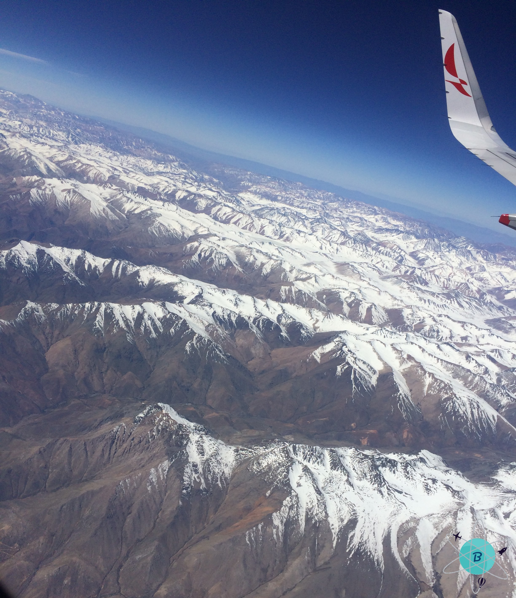
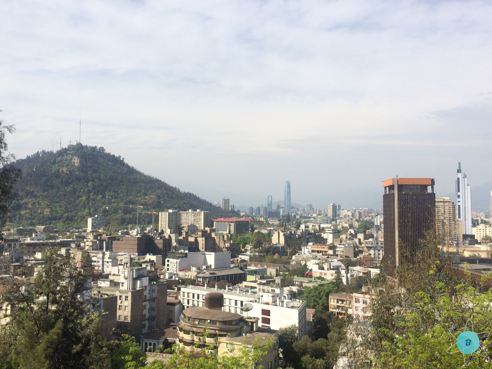
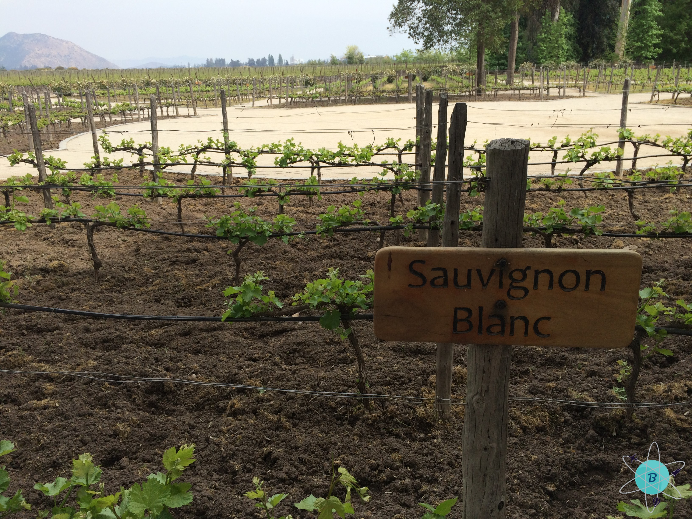
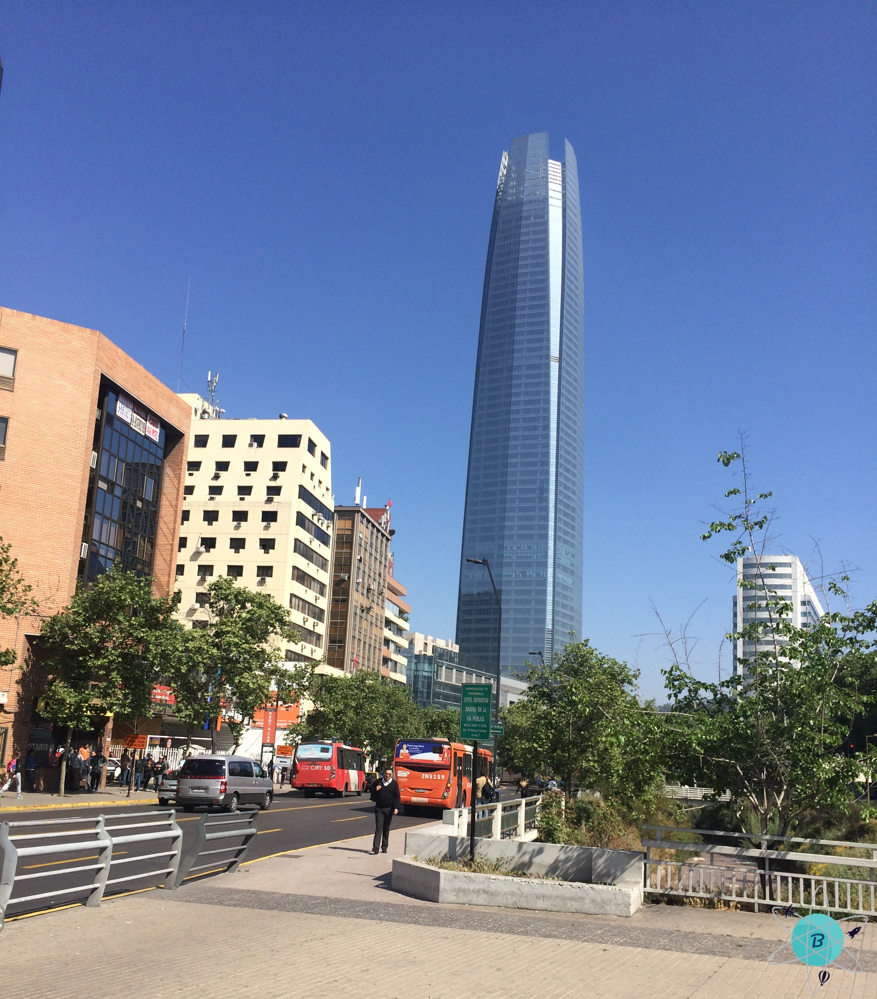
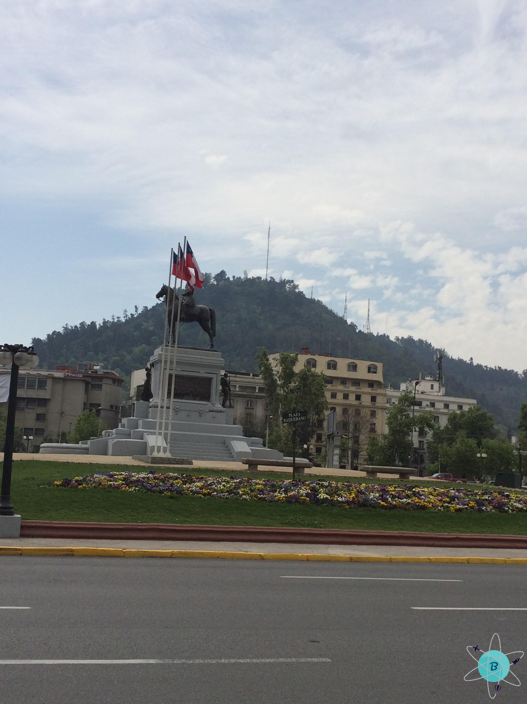

Chile y sus buenos vinos
Fecha del viaje: 15-09-2017
Este viaje lo hicimos debido a una conferencia que tuvimos en Santiago de Chile, aprovechamos la ida para conocer parte de este país, su magnífica arquitectura y su ciudad en medio de lo natural. El viaje en avión dura aproximadamente 6 horas, un largo viaje al sur del continente saliendo desde Colombia.
Llegando a la ciudad de Santiago al costado izquierdo del avión ya se empieza a divisar la belleza de este hermoso país, los Andes y su imponente pico más alto, el Aconcagua con su parte más alta mostrando una sábana de nieve, de verdad es hermoso, no logramos capturar una buena imagen para mostrarles, pero te recomendamos verlo si las condiciones climáticas te lo permiten en tu llegada a Santiago de Chile
En la ciudad es sencillo moverse por medio del transporte público, andar en metro, subirte en taxi o Uber, sin duda alguna la forma más económica es en metro, el cual está muy bien estructurado y en las estaciones pueden darte las rutas para moverte en la ciudad, adicional hay sectores donde puedes caminar y disfrutar la naturaleza mezclada con la selva de cemento.

Chile es un país con una gran costa, está es tan larga como lo es el país, 6.435 km donde se encuentran playas, ciudades y poblaciones; a tan solo dos horas de la capital está el Océano Pacífico, en la ciudad se consigue peces de diferentes sabores y especies, sus mejores platos están basados en estos animales marinos y para comprobarlo puedes visitar Ocean Pacific un restaurante ubicado en la Comuna de Vitacura cerca al centro de la ciudad, no olvides tomarte una cerveza Austral.
Luego quisimos conocer un viñedo algunos de los mejores vinos del mundo son elaborados en Chile, para llegar al viñedo Concha y Toro el cual es el mayor exportador de vinos en Latinoamérica para llegar allí coge un taxi o si quieres viajar económico, debes llegar a la estación del metro Mercedes al sur de la ciudad y después coger un autobús que te lleva a la viña concha y toro, en menos de 20 minutos estarás en la puerta del viñedo más importante de Latinoamérica.
La entrada del viñedo tiene un costo de 24.000 pesos chilenos, aproximadamente 25 dólares, con este acceso puedes dar un tour guiado donde están las historias de la época, de los dueños y sus generaciones como administradores de la viña, te muestran las diferentes cepas de vinos existentes y las cuales se pueden cultivar en estas tierras fértiles, veras como se hace un buen vino y como se debe mantener para que no pierda su calidad, te enseñan a catar sus diferentes sabores, podrás degustar algunas de sus variedades y conocerás la tradicional historia del Casillero del Diablo algo realmente mágico.

Si quieres conocer algo diferente o ir a la playa puedes viajar a la costa fácilmente solo debes coger un bus en el terminal de transportes central (La Alameda o en la siguiente que queda en la Estación Pajaritos), la empresa que va para la costa es turbus; algo curioso es que todos los buses son de doble piso y el viaje hasta valparaiso cuesta solo 7.000 pesos chilenos, aprox. unos 7 dólares y el recorrido solo dura dos horas, en el bus verás sus llanuras y paisajes. Al llegar a la costa sientes el calor que hace si viajaste en verano, a lo lejos se ven los barcos de carga esperando para poder entrar al puerto más importante de Chile, Valparaíso.
También puedes visitar museos como el marítimo y algunos lugares donde los ciudadanos han convertido en verdaderas obras de arte como el museo a cielo abierto de Valparaíso, veras muchas pinturas en las paredes de las casas del barrio es muy acogedor y atractivo, si eres amante del arte te lo recomiendo; para subir los cerros y divisar toda la ciudad y el muelle existen unos ascensores que te llevan hasta la cima eso si tienen un costo para subir, ese día que visitamos el cerro estaban haciendo protestas las personas que trabajan en los ascensores por lo que no pudimos subirnos en ellos, así que decidimos subir a pie.
Para llegar a viña del mar podrás ir en tren o en autobús, el tren va por la vía adyacente a la playa al igual que la autopista; al llegar en el borde costero verás algunos monumentos y lugares que cuentan la historia de la ciudad. En la playa si deseas puedes sentarte a disfrutar un rato de paz y tranquilidad o caminar con una buena cerveza en la mano y una buena compañía, eso si no te recomiendo ingresar al agua es muy fría y si eres caribeño lo sentirás como un dolor intenso, pero si eres de países fríos quizá en la temporada de verano puedas ingresar sin problemas al mar; no olvides visitar si tienes tiempo el casino de viña del mar, el castillo wulff y la maravillosa vista del palacio presidencial.
De regreso a la ciudad visita uno de los edificios más altos de Latinoamérica, el costanera center con una altura de 300 metros y 62 pisos, es un lugar que disfrutas al estar subiendolo claro está si te gusta la adrenalina y las alturas, pues en la cima del edificio el último piso es totalmente en vidrio con una vista de 360 grados de toda la ciudad, en invierno se pueden ver los andes cubiertos por la nieve. Si quieres visitar las montañas puedes ir a la estación ferroviaria Escuela militar que se encuentra en el barrio los condes y tomar un tour u otra opción es coger un bus que sale desde la Plaza Italia el recorrido dura aprox. una hora, al llegar verás las montañas: Farellones, El Colorado y el más alto es Valle Nevado; y por supuesto que puedes subir a cada una de las montañas y sentir la nieve.
Un lugar muy significativo para los chilenos es la Plaza Italia ya que cerca de allí se encuentran los monumentos e instituciones más importantes de la historia como la Imprenta Nacional, Palacio de Bellas Artes y el Cerro Santa Lucía un parque urbano donde está ubicado el Castillo Hidalgo que recuerda su historia prehispánica.
Tipyagers
- Debes comer un buen pescado, te recomiendo el mero la especialidad del país es la comida de mar.
- No dejes de probar el pisco sour es un coctel delicioso.
- Tienes que visitar un museo para conocer el legado de sus ancestros los mapuches, grandes guerreros.
- No olvides comprar un vino en el Casillero del diablo nada como llevarse un buen vino desde su lugar de origen.